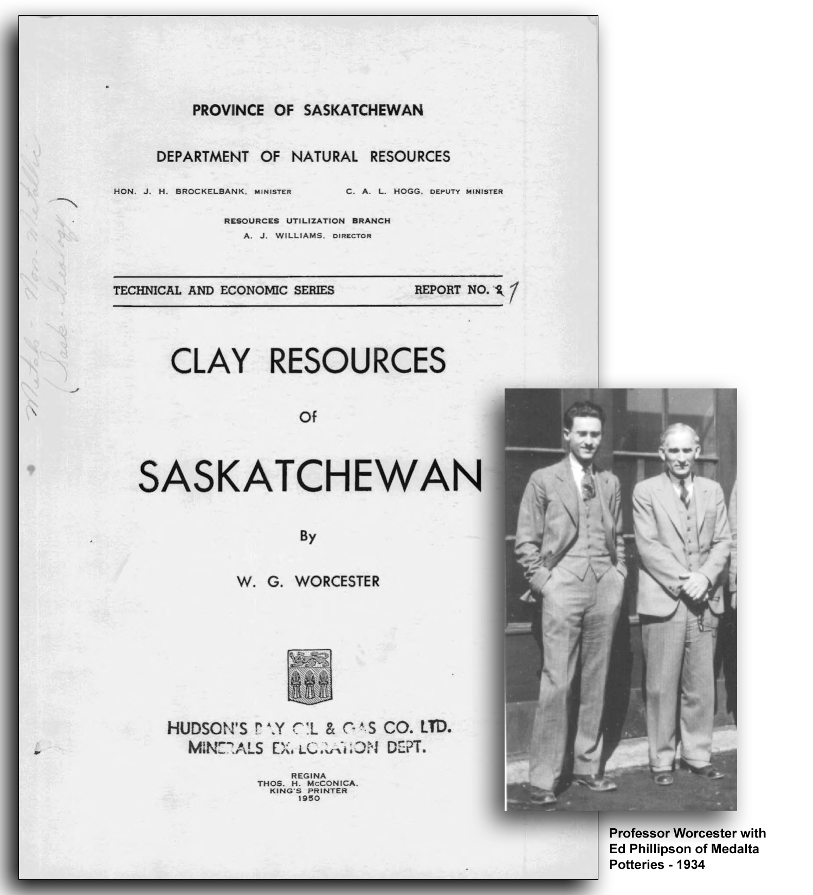
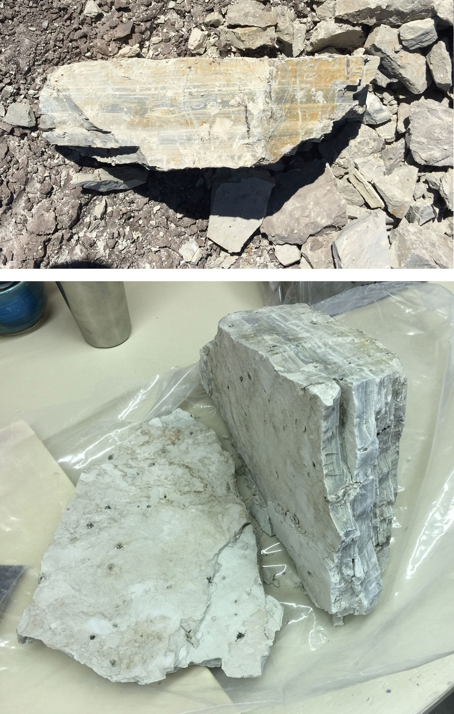
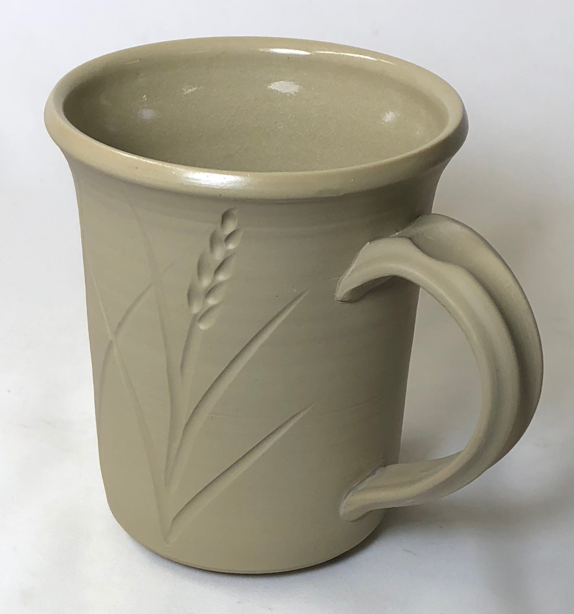
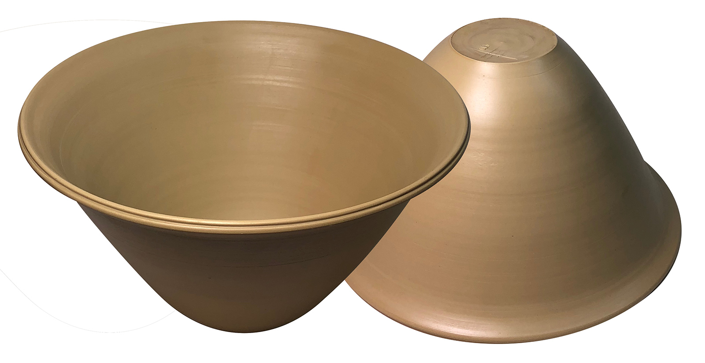
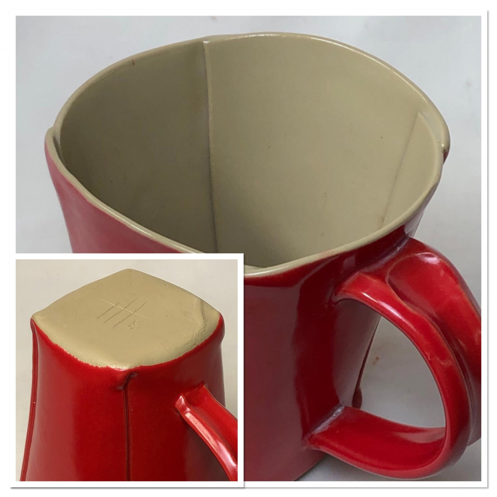

A cereal bowl jigger mold made using 3D printing
Beer Bottle Master Mold via 3D Printing
Better porosity for Brown Sugar Savers
Build a kiln monitoring device
Celebration Project
Coffee Mug Slip Casting Mold via 3D Printing
Comparing the Melt Fluidity of 16 Frits
Cookie Cutting clay with 3D printed cutters
Evaluating a clay's suitability for use in pottery
Make a mold for 4-gallon stackable calciners
Make Your Own Pyrometric Cones
Make your own sieve shaker to process ceramic slurries
Making a high quality ceramic tile
Making a Plaster Table
Making Bricks
Making our own kiln posts using a hand extruder
Medalta Ball Pitcher Slip Casting Mold via 3D Printing
Medalta Jug Master Mold Development
Mold Natches
Mug Handle Casting
Nursery plant pot mold via 3D printing
Pie-Crust Mug-Making Method
Plainsman 3D, Mother Nature's Porcelain/Stoneware
Project to Document a Shimpo Jiggering Attachment
Roll, Cut, Pull, Attach Handle-making Method
Slurry Mixing and Dewatering Your Own Clay Body
Testing a New Load of EP Kaolin
Using milk as a glaze
Mother Nature's Porcelain - Plainsman 3B
Since the 1970s, Plainsman Clays has been importing thousands of tons of refined materials from all over the US (and even other parts of the world) to make porcelain bodies. However, for us, the incredible rise in cost of shipping is forcing a reassessment.
It is important to note that porcelains are such, not just because they fire white, but because they fire vitreous and strong. Where pieces are being covered with opaque glazes, the color of the underlying porcelain is not an issue. The Saskatchewan clays I am studying contain the natural feldspar, quartz and a variety of clay minerals, all blended by nature, to produce porcelains, that although not white-burning, rival or exceed the strength and durability that can be achieved by using industrial minerals. Some of these clays can be fired well past the point of maximum density, developing a more and more glassy surface, yet resisting warping, even of very thin-walled ware. Mineral-mix porcelains always require the addition of often costly bentonites to achieve enough plasticity to make them workable, but these Saskatchewan clays have natural plasticities. Many areas around the world have similar materials, some are much whiter that this.
3B is the smoothest material Plainsman mines in the Whitemuds (no sand detectable to the touch). And the whitest in the raw state. It fires vitreous at cone 6-8 (2200F). It is at the middle of the formation that we mine, about 1 metre thick. We depend on this material for many clay bodies and the depletion of 3B is the primary motivator in doing new minings. Recently we have discovered that if slurried and sieved to 325 mesh, quartz particles are revealed. When removed, the resultant material is a plastic ready-to-use porcelain for cone 2-4. One that fires to steel-like strength. It is not even possible to make a body like this using traditional mixes of industrial minerals!
Related Information
Landmark Book on the Clay Resources of Saskatchewan

This picture has its own page with more detail, click here to see it.
Written by W. G. Worcester and published in 1950. He was the first head of the University of Saskatchewan’s one-man Department of Ceramic Engineering and had a lab equipped with clay processing and testing equipment that many would admire today! He outlines clay geology in general, then the geological history of the province of Saskatchewan in that context. He describes the technology of ceramic materials, the major clays used in industry and the equivalent materials in the province. He submits hundreds of samples with physical test data clearly describing them and their locations (using extensive maps and diagrams). His work inspired Luke Lindoe, who continued it during the 1950s to 1970s. That inspired us to develop the testing methods used at Plainsman Clays to this day. And it gave us several clay quarries that have served the company for 50 years. It also alerts us that there of clay of much higher quality further east.
Mel Noble at Plainsman Clay's Ravenscrag, Saskatchewan quarry

This picture has its own page with more detail, click here to see it.
Six different sedimentary clays are extracted from this quarry. It was opened in the 1970s, the best location available at the time. These test bars were made by slaking select lumps from each layer (thus exhibiting their best performance). The left-most dried test bars show the layers (top to bottom). The A1 top layer is the most plastic and has the most iron contamination (it is used in the most speckled reduction firing bodies). A2, the second one down, is a ball clay (similar to commercial products, although darker burning), it is very refractory and the base for Plainsman Fireclay. A3, third from top, is a complete buff high-temperature stoneware (like H550), although sandy and over-mature at cone 10. 3B, third from bottom, is a smooth medium-temperature stoneware; it contains significant natural feldspar (although fired color and particulate contamination are the most variable). The second from the bottom, 3C. fires the whitest and is the most refractory (it is the base for H441G). The bottom one, 3D, the best product in the quarry. Although the least plastic and most silty, it is also very fine particled and the cleanest (consistently free of particulate impurities and sand), it pairs very well with a ball clay to make a cone 6 stoneware.
Mother Nature's Porcelain: The lumps in the quarry

This picture has its own page with more detail, click here to see it.
This 50 lb lump is from a quarry where we are mining the Whitemud Formation in southern Saskatchewan. This layer is extracted from the top of a hill at the bottom of a valley, putting it more than 50 meters below the prairie surface. The lumps are extremely dense and very heavy. They are also quite damp, about 12% by weight fossil water. They exhibit this horizontal layering, a clear indication of the sedimentary nature of the deposit. The clay is exceedingly fine-particled and the silica present exists in rounded grains finer than about 150 mesh. There are flecks of high-carbon material and some tiny iron particles. When lumps like this dry out when exposed to the sun they break down into thousands of pure-white pieces. These dry lumps slake quickly in water to create a creamy smooth slurry from which I can easily sieve out the carbon and iron particles to produce the hyper-smooth natural porcelain.
Mother Nature's porcelain - From the Cretaceous period

This picture has its own page with more detail, click here to see it.
During a 6 week of mining in 2018 in Ravenscrag, Saskatchewan we extracted marine sediment layers of the late Cretaceous period. The center portion of the "B layer", as we call it, is unbelievably fine particled (impossibly smooth, like a body that is pure terra sigillata)! The feldspar and silica are built-in, producing a glassy body surface, starting at cone 4 and lasting to cone 8. Despite this, pieces don't warp in firings! I have not glazed the outside of this mug for demo purposes. I got away with it this time because the Ravenscrag clear glaze GR6-A is very compatible (the thermal expansion is high enough to avoid glaze compression issues and low enough not to craze). With other less compatible glazes these mugs cracked when I poured in hot coffee. To make this body I am slurrying it up as a slip and processing it to 325 mesh (using a vibrating sieve).
Mother Nature's porcelain…
With Mother Nature’s glaze

This picture has its own page with more detail, click here to see it.
These bowls were fired at cone 6. The body is amazingly vitreous, given that pieces are very resistant to warping during firing. In fact, other pieces made from it having walls as thin as 2mm, did not warp either! This comes from a two-foot-thick section of the 3B layer from a Plainsman Clays quarry near Ravenscrag, Saskatchewan, Canada. It is plastic and feels smoother than any commercial porcelain. It does not fire white because Mother Nature included some iron oxide in the clay itself and in the soluble salts that produce the glaze-like surface (these disappear when a clear glaze is applied). It accepts glaze like a porcelain.
Incredible Mother Nature’s porcelain

This picture has its own page with more detail, click here to see it.
This is made from 100% of a natural clay (3B) from the Whitemud formation in Ravenscrag, Saskatchewan. To make this body, which I call MNP, I slake and slurry up the raw clay lumps, sieve it to 200 mesh and then dewater on a plaster table. I rolled the plastic clay into a thin layer, cut it into a cross-shape using a 3D printed cookie-cutter, drape-molded it over a plaster form and then slip-joined the seams. It fires very dense and strong (to zero porosity like glass!). It holds together well and joins well with its own slip. Although not super plastic, it is smooth and fine-grained like a commercial porcelain body. I add 1-2% bentonite to make it more plastic when needed. It can be rolled extremely thin and yet does not warp in the firing! This mug has a weight-to-volume ratio of 2.08 (the weight of water it will hold compared to its own weight).
Mother Natures's porcelain - Mug unglazed on the outside
This natural porcelain is so vitreous that no glaze is needed for a functional surface. Fired at cone 6. Clear glazed inside is GA6-B Ravenscrag Slip. There is a small crack on the lower handle join, I am continuing to learn how to dry these pieces crack-free. By Tony Hansen.
Mother Nature's Porcelain Mug
Deep blue Mother Nature's porcelain with rutile glaze
Slab-built using my 'pie crust' technique. Cone 6 C6DHSC slow-cool firing schedule. The glaze is GA6-C Alberta Slip rutile blue. The raw MNP vitreous surface exhibits a stunning deep-blue color (although not visible since this piece is glazed). However the blue does bleed up into covering glazes, making them more vibrant. And it highlights contours since the thinner glaze layer shows more of the underlying blue. Mug by Tony Hansen.
 PayPal | No tracking, No ads, No paywall, No transient content! Just organized, concise information constantly updated and improved. Was this helpful? Consider supporting me. |
| By Tony Hansen Follow me on        |  |
Got a Question?
Buy me a coffee and we can talk 

https://digitalfire.com, All Rights Reserved
Privacy Policy